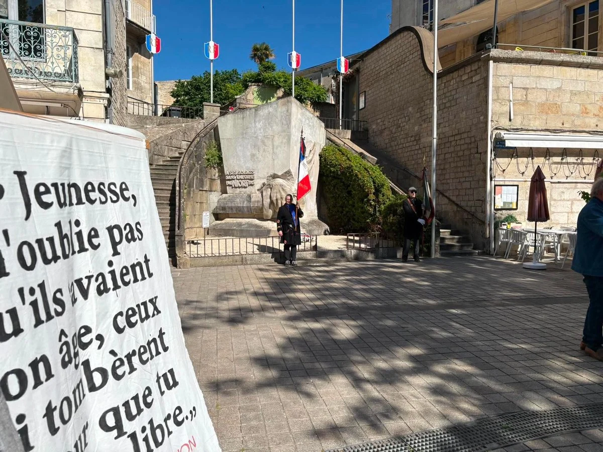

Publication sur X
À Niort, le 8 Mai et l’héritage du Conseil national de la Résistance
Date de publication sur X · 8 mai 2026
Repères éditoriaux
Au pied des noms gravés, nous avons rappelé ce que nous devons à la Résistance et aux conquêtes du Conseil national de la Résistance.
Texte de la publication sur X
8 mai 1945.
À Niort, comme partout, on commémore la mémoire, les noms gravés.
Y a 81 ans les résistants nous ont rendu la République. Et ce qu’ils nous ont légué dépasse la Libération : Sécu, nationalisations, droit du travail, école laïque renforcée. Le CNR. https://t.co/hBpg9lHBdj

Sources
PCF 79 · @79Parti sur X · AR-0005-TW-2052769621745213889
À lire aussi · À Châteaubriant, l’hommage du 22 octobre aux fusillés · Le lien d’origine
Publications associées
- À Niort, nous avons commémoré le 8 Mai et l’héritage de la Résistance · Version Facebook
- Le 8 Mai. Aragon et la mémoire des résistants · Réponse dans le même fil